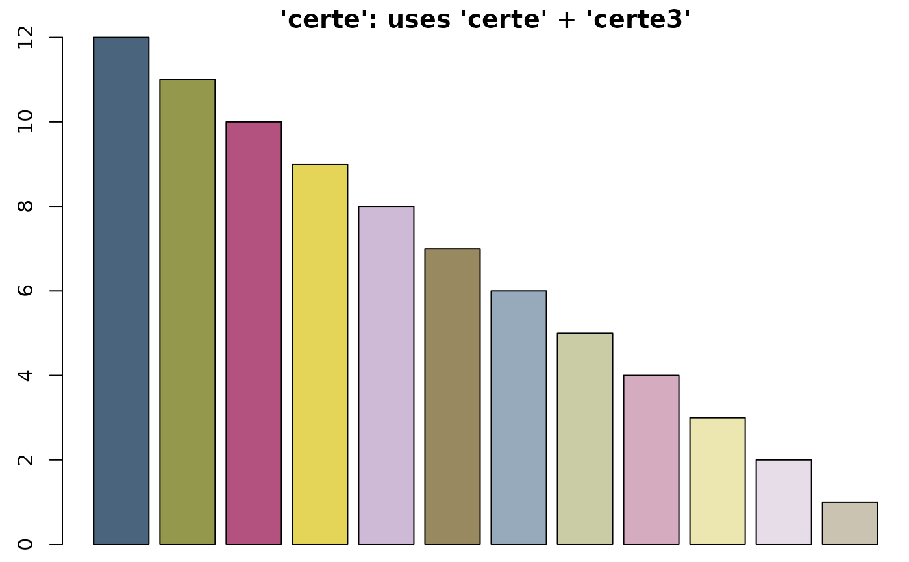
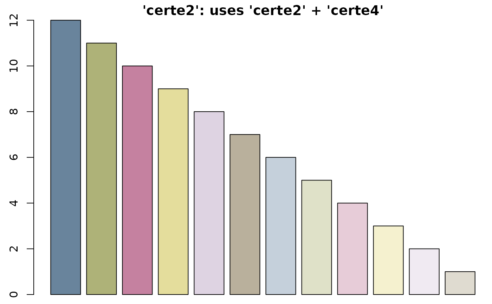
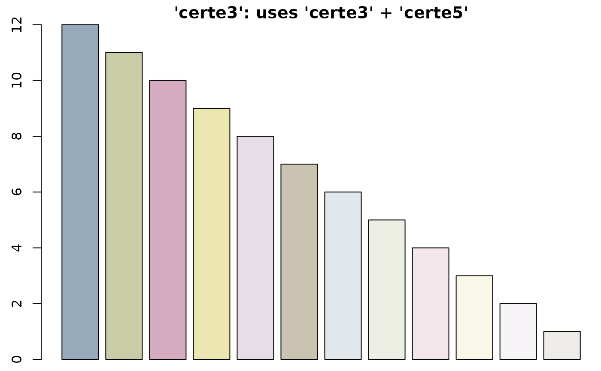
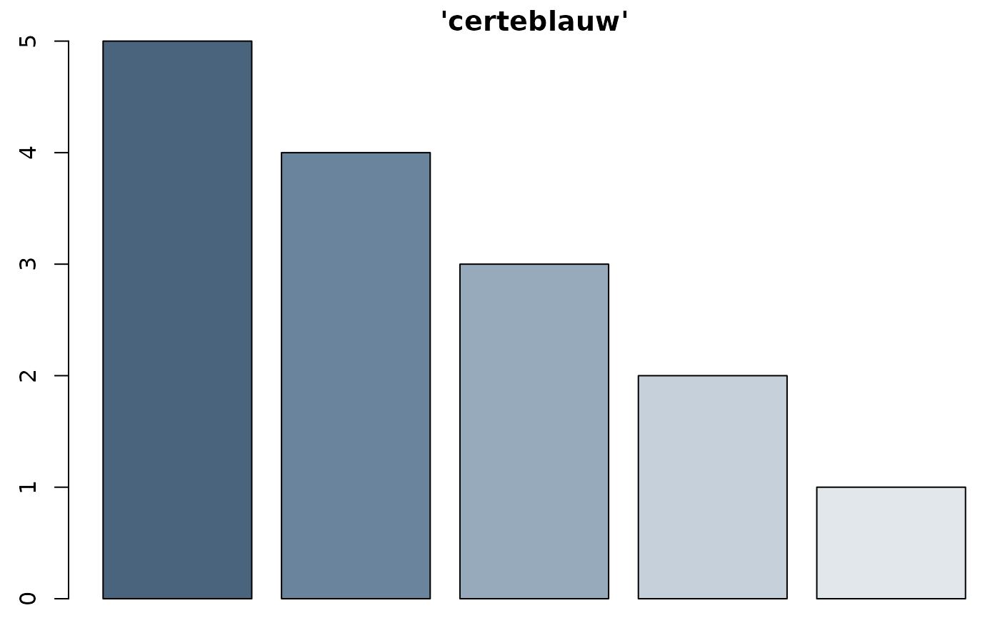
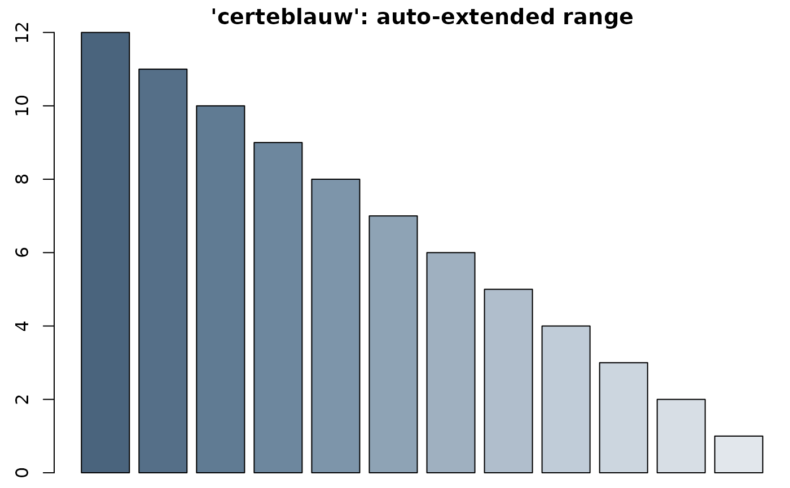

Colours from R, Certe, viridis and more. The output prints in the console with the actual colours.
colourpicker(x, length = 1, opacity = 0, ...) # S3 method for colourpicker as.character(x, ...) # S3 method for colourpicker print(x, ...)
| x | colour or colour palette name. Certe colours will be used from the certe.colours object. Input can be:
|
|---|---|
| length | size of the vector to be returned |
| opacity | amount of opacity (0 = solid, 1 = transparent) |
| ... | not used at the moment |
character vector in HTML format (i.e., "#AABBCC") with new class colourpicker
Certe colours will be chosen as divergent as possible if the required output length is not too high. For example:
x = "certe" tries to only return the "certe" colours ("certeblauw", "certegroen", ...), the "certe3" colours ("certeblauw3", "certegroen3", ...) and the "certe5" colours ("certeblauw5", "certegroen5", ...)
x = "certe2" tries to only return the regular "certe2" colours ("certeblauw2", "certegroen2", ...), the "certe4" colours ("certeblauw4", "certegroen4", ...) and the "certe6" colours ("certeblauw6", "certegroen6", ...)
x = "certe3" tries to only return the "certe3" colours ("certeblauw3", "certegroen3", ...) and the "certe5" colours ("certeblauw5", "certegroen5", ...)
colourpicker("certegroen") #> [1] "#8B9934" colourpicker("certe", 5) #> [1] "#01617E" "#8B9934" "#E04883" "#FFE400" "#AB79B3" colourpicker(c("certeblauw", "red", "tan1", "#ffa", "FFAA00")) #> [1] "#01617E" "#FF0000" "#FFA54F" "#FFFFAA" "#FFAA00" par(mar = c(0.5, 2.5, 1.5, 0)) # set plot margins for below plots # Certe colours barplot(12:1, col = colourpicker("certe", 12), main = "'certe': uses 'certe' + 'certe3'")  barplot(12:1, col = colourpicker("certe2", 12), main = "'certe2': uses 'certe2' + 'certe4'")  barplot(12:1, col = colourpicker("certe3", 12), main = "'certe3': uses 'certe3' + 'certe5'")  # all colourblind-safe colour palettes from the famous viridisLite package barplot(1:7, col = colourpicker("viridis", 7))  barplot(1:7, col = colourpicker("magma", 7)) 